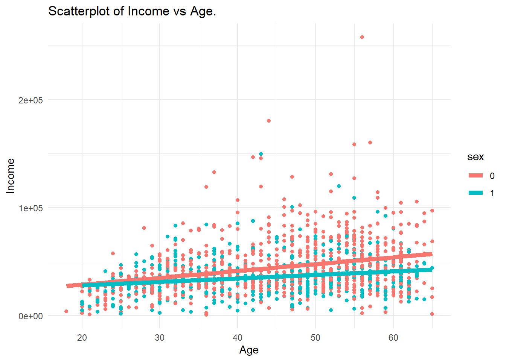
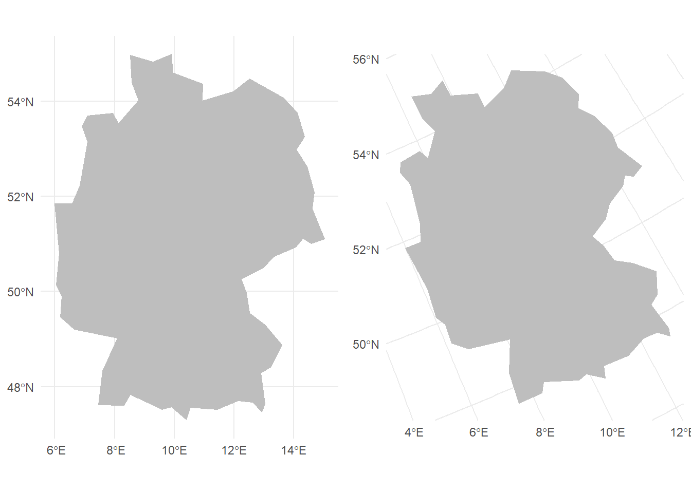
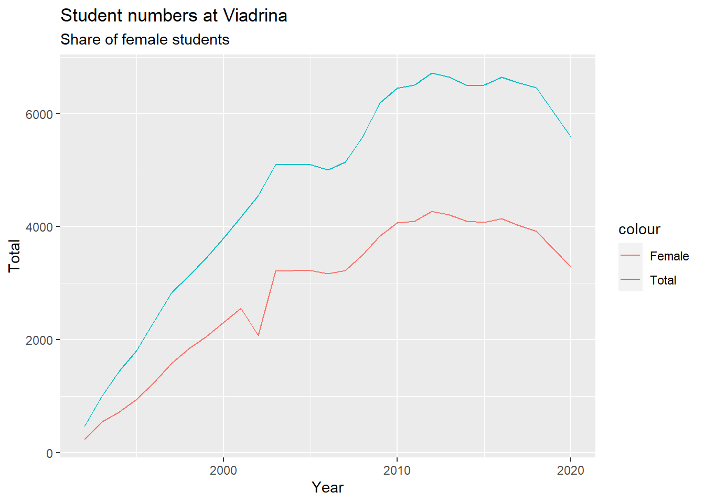

Chapter 12 How much money do you earn?
The Mincer Equation is single-equation model that explains wage income as a function of schooling and experience.
12.1 Data
We use SOEP practice data to analyse yearly income. The analysis is restricted to people who are fulltime employed (erwerb == 1) in the working age (alter <= 65) who report an annual income of more than
library(haven)
master <- read_dta("https://github.com/MarcoKuehne/marcokuehne.github.io/blob/main/data/SOEP/practice_en/practice_dataset_eng.dta?raw=true")
library(sjlabelled)
soep <- remove_all_labels(master)
library(tidyverse)
soep <- soep %>%
mutate(sex = factor(sex))
soep <- soep %>%
filter(erwerb == 1) %>%
filter(alter <= 65) %>%
filter(einkommenj1 > 1)
#filter(syear == 2019)
# soep <- soep %>% mutate(industry = case_when(branche %in% c(1,2,3) ~ "Agriculture",
# branche %in% c(40,41) ~ "Energy",
# branche %in% c(10,11,12,13,14) ~ "Mining",
# branche %in% c(15,16,17,18,19,20,21,22,23,24,25,26,27,28,29,
# 30,31,32,33,34,35,36,37,96,97,100) ~ "Manufacturing",
# branche %in% c(45) ~ "Construction",
# branche %in% c(50,51,52,55) ~ "Trade",
# branche %in% c(60,61,62,63,64) ~ "Transport",
# branche %in% c(65,66,67) ~ "Banking",
# branche %in% c(70,71,72,73,74,75,80,85,90,91,92,93,95,98,99) ~ "Services",
# TRUE ~ "Other"))
#table(soep$syear)
#summary(soep$einkommenj1)
#head(table(soep$einkommenj1))https://connects.world/nace-codes/
NACE is the acronym used to designate the various statistical classifications of economic activities developed since 1970 in the European Union (EU). NACE provides the framework for collecting and presenting a large range of statistical data according to economic activity in the fields of economic statistics (e.g. business statistics, labour market, national accounts) and in other statistical domains.
99 categories
https://ec.europa.eu/competition/mergers/cases/index/nace_all.html https://ec.europa.eu/eurostat/statistics-explained/index.php?title=Glossary:International_standard_industrial_classification_of_all_economic_activities_(ISIC) https://ec.europa.eu/eurostat/statistics-explained/index.php?title=Glossary:Statistical_classification_of_economic_activities_in_the_European_Community_(NACE) https://en.wikipedia.org/wiki/Statistical_Classification_of_Economic_Activities_in_the_European_Community
Level 2: 88 divisions identified by two-digit numerical codes (01 to 99);
https://www.diw.de/documents/publikationen/73/diw_01.c.836478.de/diw_ssp1082.pdf
groups
12.2 Data Visualization
This is like two scatterplots drawn in one graph.
Please create a scatterplot of weight by height (both numeric/continuous variables) colored by gender. Add one linear regression line per gender (a regression per subgroup).

12.3 Simplest Regression
The simplest regression or empty model does not contain any explanatory variable.
simplest <- lm(einkommenj1 ~ 1, data=soep)
library(modelsummary)
modelsummary(title = 'Empty Model.',
list("Income" = simplest),
gof_omit = 'R2|AIC|BIC|RMSE|Log.Lik.',
coef_map = cm)| Income | |
|---|---|
| Constant | 39438.208 |
| (263.082) | |
| Num.Obs. | 7715 |
Please create the graphs below. Create each ggplot graph and store the results (e.g. plot1 and plot2). With help of package gridExtra the grid.arrange() function can do the job for side by side plots, e.g. grid.arrange(plot1, plot2, ncol=2).
The left panel shows the grand mean (red) for all observations. The second panel shows the grand mean (this time black) as well as the two group means by gender (red and blue).

12.4 Simple Regression
12.4.1 X is continuous
simple1 <- lm(einkommenj1 ~ alter, data=soep)
modelsummary(title = 'Continuous Predictor.',
list("Income" = simple1),
gof_omit = 'R2|AIC|BIC|RMSE|Log.Lik.',
coef_map = cm)| Income | |
|---|---|
| Age | 586.415 |
| (22.599) | |
| Constant | 13714.082 |
| (1022.942) | |
| Num.Obs. | 7715 |
| F | 673.348 |
Marco is approximately 1.85m tall. Please calculate his expected weight in kg according to model simple1. Hint: Please access and use the model components like coefficients as in simple1$coefficients in order to solve the task.
12.4.2 X is a dummy
simple2 <- lm(einkommenj1 ~ sex, data=soep)
modelsummary(title = 'Dummy Predictor.',
list("Income" = simple2),
gof_omit = 'R2|AIC|BIC|RMSE|Log.Lik.',
coef_map = cm)| Income | |
|---|---|
| Female | -9835.343 |
| (541.698) | |
| Constant | 42839.465 |
| (318.554) | |
| Num.Obs. | 7715 |
| F | 329.658 |
Marco is male. Please calculate his expected weight in kg according to model simple2. Hint: Please access and use the model components like coefficients as in simple2$coefficients in order to solve the task.
12.4.3 X is categorical
We select all states in East Germany. Filter the region variable appropriately. Store the new data as east.
soep <- soep %>%
mutate(industry = case_when(branche %in% c(1,2,3) ~ "Agriculture",
branche %in% c(5:9) ~ "Mining",
branche %in% c(10:32) ~ "Manufacturing",
branche %in% c(35:38) ~ "Energy",
branche %in% c(41:43) ~ "Construction",
branche %in% c(50,51,52,55) ~ "Trade",
branche %in% c(60,61,62,63,64) ~ "Transport",
branche %in% c(65,66,67) ~ "Banking",
branche %in% c(70,71,72,73,74,75,80,85,90,91,92,93,95,98,99) ~ "Services",
TRUE ~ "Other"))
table(soep$industry)##
## Agriculture Banking Construction Energy Manufacturing
## 80 50 441 170 1970
## Mining Other Services Trade Transport
## 10 3470 796 239 489Variable state contains all 16 states of Germany. Whereas female is already recognized as a factor variable (fct), state is classified as a double with labels (dbl+lbl), i.e. R assumes state is a continuous variable between 1 and 16.
Convert state to factor. Use mutate and as_factor on the state variable. Set the levels of this factor variable to official state abbreviations, i.e. "BE", "BB", "MV", "SN", "ST", "TH" by setting levels(east$state) equal to the list of abbreviations.
Run regression with categorical variable state on the east sample. The output should look like this:
simple3 <- lm(einkommenj1 ~ industry, data=soep)
modelsummary(title = 'Categorical Predictor.',
list("Income" = simple3),
gof_omit = 'R2|AIC|BIC|RMSE|Log.Lik.',
coef_map = cm)| Income | |
|---|---|
| Banking | 39572.605 |
| (3982.233) | |
| Construction | 3959.630 |
| (2684.353) | |
| Energy | 16447.384 |
| (2994.922) | |
| Manufacturing | 16417.953 |
| (2519.323) | |
| Mining | 26074.865 |
| (7409.028) | |
| Transport | 31846.085 |
| (2664.046) | |
| Trade | 5945.804 |
| (2853.227) | |
| Services | 18088.445 |
| (2590.810) | |
| Other | 9482.938 |
| (2497.983) | |
| Constant | 26032.767 |
| (2469.676) | |
| Num.Obs. | 7715 |
| F | 81.851 |
12.5 Parallel Slopes
12.5.1 X is continuous + dummy
Please replicate the following plot.

Bonus. Marco is male and about 185cm.
parallel1 <- lm(einkommenj1 ~ alter + sex, data=soep)
modelsummary(title = 'Categorical Predictor.',
list("Income" = parallel1),
gof_omit = 'R2|AIC|BIC|RMSE|Log.Lik.',
coef_map = cm)| Income | |
|---|---|
| Age | 559.490 |
| (22.242) | |
| Female | -8902.995 |
| (522.107) | |
| Constant | 17974.012 |
| (1034.857) | |
| Num.Obs. | 7715 |
| F | 494.709 |
Please calculate his expected weight in kg according to model parallel1. Please access and use the model components like coefficients as in parallel1$coefficients in order to solve the task.
parallel1$coefficients[1] + 185 * parallel1$coefficients[2] = 90.55837
12.6 Model Comparison
simple4 <- lm(einkommenj1 ~ alter + sex + industry, data=soep)
modelsummary(title = 'Linear regression models compared.',
list("Income" = simplest,
"Income" = simple1,
"Income" = simple2,
"Income" = simple3,
"Income" = parallel1,
"Income" = simple4),
gof_omit = 'RMSE|Log.Lik.|F|AIC|BIC',
metrics = "all",
coef_map = cm)| Income | Income | Income | Income | Income | Income | |
|---|---|---|---|---|---|---|
| Age | 586.415 | 559.490 | 541.752 | |||
| (22.599) | (22.242) | (21.261) | ||||
| Female | -9835.343 | -8902.995 | -9196.190 | |||
| (541.698) | (522.107) | (517.233) | ||||
| Banking | 39572.605 | 43336.180 | ||||
| (3982.233) | (3741.484) | |||||
| Construction | 3959.630 | 6752.980 | ||||
| (2684.353) | (2525.069) | |||||
| Energy | 16447.384 | 18668.936 | ||||
| (2994.922) | (2813.544) | |||||
| Manufacturing | 16417.953 | 19706.166 | ||||
| (2519.323) | (2368.276) | |||||
| Mining | 26074.865 | 24240.530 | ||||
| (7409.028) | (6957.282) | |||||
| Transport | 31846.085 | 35370.429 | ||||
| (2664.046) | (2503.926) | |||||
| Trade | 5945.804 | 10435.558 | ||||
| (2853.227) | (2682.825) | |||||
| Services | 18088.445 | 23835.140 | ||||
| (2590.810) | (2440.633) | |||||
| Other | 9482.938 | 15121.196 | ||||
| (2497.983) | (2352.626) | |||||
| Constant | 39438.208 | 13714.082 | 42839.465 | 26032.767 | 17974.012 | 886.488 |
| (263.082) | (1022.942) | (318.554) | (2469.676) | (1034.857) | (2547.659) | |
| Num.Obs. | 7715 | 7715 | 7715 | 7715 | 7715 | 7715 |
| R2 | 0.000 | 0.080 | 0.041 | 0.087 | 0.114 | 0.195 |
| R2 Adj. | 0.000 | 0.080 | 0.041 | 0.086 | 0.113 | 0.194 |
Definition
R square (R2) is a statistical measure that represents the proportion of the variance in the dependent variable (Y) that is explained by the independent variable(s) (X) in a regression model. It is also known as the coefficient of determination.
R2 measures how well the regression model fits the data. R2 can range from 0 to 1, where 0 indicates that none of the variance in the dependent variable is explained by the independent variable(s), and 1 indicates that all of the variance in the dependent variable is explained by the independent variable(s). A higher R2 indicates a better fit between the model and the data, meaning that more of the variability in the dependent variable can be explained by the independent variable(s) in the model.
For example, in some fields like social sciences or economics, an R2 value of 0.3 or higher may be considered a good fit for a model. In other fields like physics or engineering, a higher R2 value of 0.7 or above may be necessary to demonstrate a good fit.
R2 usually increases with sample size.
In least squares regression using typical data, R2 is at least weakly increasing with increases in the number of regressors in the model. Because increases in the number of regressors increase the value of R2, R2 alone cannot be used as a meaningful comparison of models with very different numbers of independent variables (wiki).
Definition
Adjusted R2 is a modified version of R2 that takes into account the number of independent variables in a regression model.
\[Adjusted R2 = 1 - [(1 - R2) * \frac{n - 1}{n - k}] \tag{with intercept}\] \[Adjusted R2 = 1 - [(1 - R2) * \frac{n - 1}{n - k - 1}] \tag{no intercept}\]